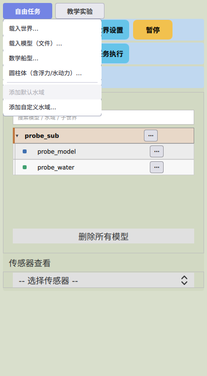

界面速览
实验控制，一目了然——下面是真实运行界面（自由任务模式）。

- 双模式切换自由任务 / 教学实验，适配自主探索与课程教学两类场景
- 世界与模型载入世界、载入模型文件；内置数学船型、圆柱体（含浮力/水动力）等预设
- 水域海况添加默认水域 / 自定义水域，波浪参数 GUI 下发、即时生效
- 执行控制世界设置、任务执行、暂停/继续一屏可达
- 传感器查看IMU、BDS（北斗）定位、磁力计、图像、激光雷达实时数据
控制联调
你的控制器，直接接进来
模型就绪后，ROS 2 桥接节点自动建立话题——无需手动接线。
Bash · ros2 topic
# 加载模型后，桥接节点按 /keship/model_ready 事件自动建立：
/keship/thrust/<实例名>/thrust_0 # 推进器推力指令（ROS → Gazebo）
<实例名>/pose # 船舶位姿（Gazebo → ROS）
<实例名>/<传感器>/<名称> # IMU / NavSat(BDS) / 磁力计 / 图像 / 激光雷达实例名即话题名
全部话题以 GUI 中加载的模型实例名命名——先在 GUI 加载模型，再订阅对应话题。
MATLAB / Python 均可
任何支持 ROS 2 的控制器框架（MATLAB Robotics System Toolbox、Python rclpy 等）都可直接发布推力指令、订阅位姿与传感器数据。
无头驱动
批量实验可不起 GUI：ros2 launch keship keship.launch.py headless:=true，再用 keship_ctl 指令方式驱动仿真。